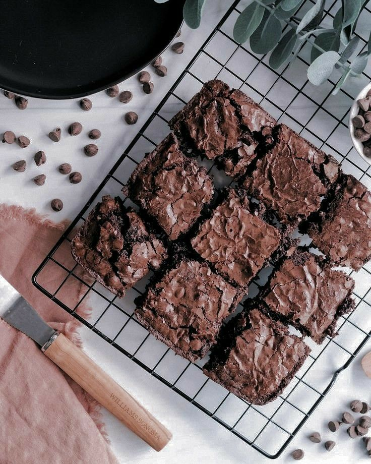

Classic Fudgy Brownies
Introduction
Brownies are the ultimate chocolate indulgence, and this recipe leans toward the fudgy side rather than cakey. They’re dense, chewy, and full of chocolate flavor. The secret is melted butter and cocoa, plus just enough flour to hold them together. I love adding a handful of chopped nuts or chocolate chunks for extra texture. These brownies taste great on their own, but you can also serve them warm with ice cream for a quick dessert. The best part? They only take about 10 minutes to prepare before baking. If you’re looking for a reliable, crowd-pleasing recipe, this one delivers every single time.
Ingredients
- 1/2 cup butter, melted
- 1 cup sugar
- 2 large eggs
- 1 tsp vanilla extract
- 1/3 cup cocoa powder
- 1/2 cup flour
- 1/4 tsp salt
- 1/4 tsp baking powder
Instructions
- Preheat oven to 350°F (175°C). Grease a square baking pan.
- Mix melted butter, sugar, eggs, and vanilla until smooth.
- Sift in cocoa, flour, salt, and baking powder. Stir gently until combined.
- Pour into prepared pan and bake 20–25 minutes. Do not overbake; center should be slightly soft.
- Cool completely before cutting into squares. Store in an airtight container.